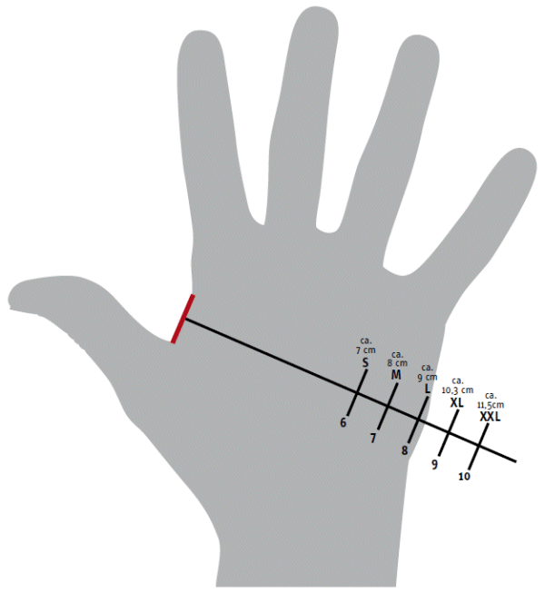

Für hohen Tragekomfort und bequemes Arbeiten ist die richtige Handschuhegröße wichtig! Um die richtige Handschuhgröße festzulegen, legen Sie bitte wie auf der Schablone gezeigt, ein Lineal zwischen Daumen und Zeigefinger an und lesen die "cm" ab. Auf der Schablone ist die richtige Handschuhgröße abzulesen.
